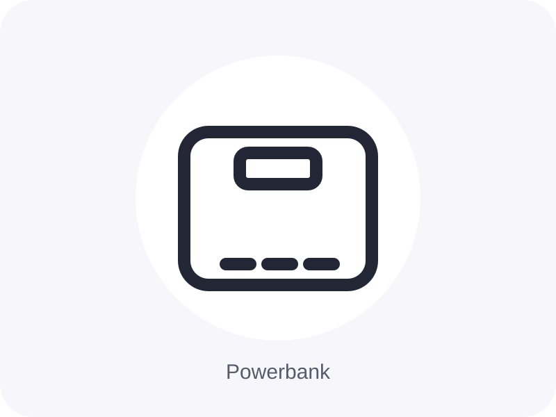
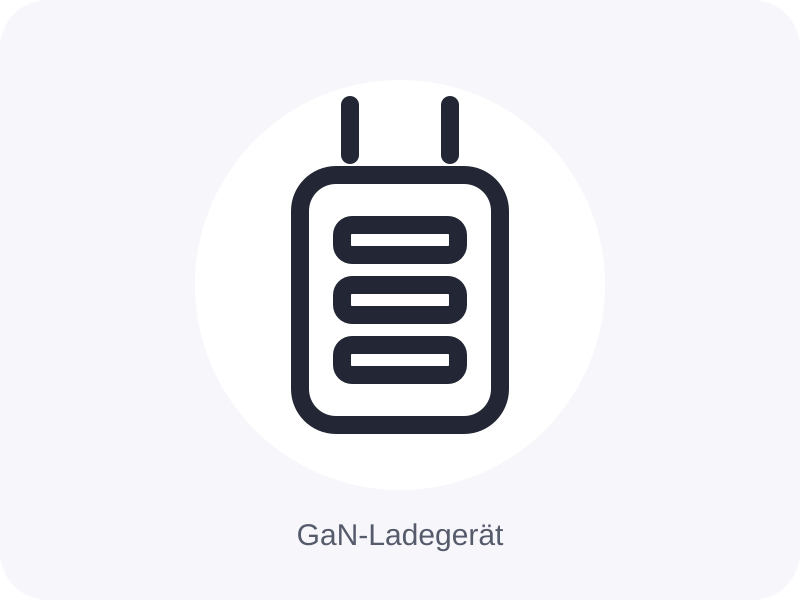
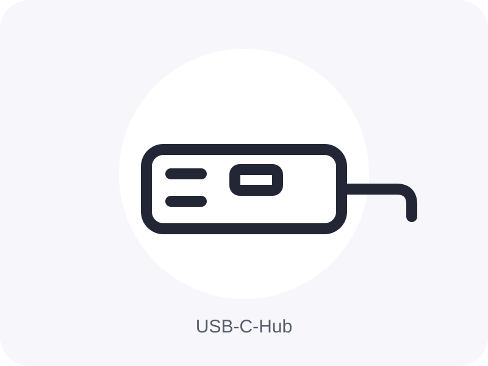
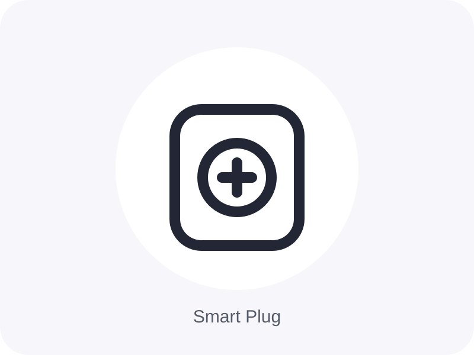

Küche · Ninja
Ninja Foodi MAX Dual Zone AF400EU
Große Dual-Zone-Heißluftfritteuse für zwei Speisen mit getrennten Garbereichen – interessant für Familien und größere Portionen.
- 2 getrennte Garzonen
- Großes Fassungsvermögen
- Hohe Nachfrage
Schönes & Nützliches für den Alltag
Eine kuratierte Auswahl aus Wohnen, Küche, Technik und Alltag – übersichtlich gesammelt und schnell gefunden.
Empfehlungen ansehenFür Pinterest
Ideal als Zielseite für einzelne Pins: Jede Sammlung hat eine eigene URL und zeigt nur die passenden Produkte.
Ratgeber
Eigene redaktionelle Inhalte mit Kriterien, Tipps und Platz für passende Produktempfehlungen.
Eine Auswahl kleiner Helfer, die Arbeitsabläufe in der Küche einfacher und ordentlicher machen können.
Ratgeber lesen → WohnenIdeen für ein wohnliches, aufgeräumtes Zuhause ohne unnötig viele Einzelteile.
Ratgeber lesen → AlltagKleine Verbesserungen für einen übersichtlichen und angenehmen Arbeitsplatz.
Ratgeber lesen → TechnikUnaufgeregte Technikprodukte, die Kabel, Laden und Geräteorganisation vereinfachen können.
Ratgeber lesen → KücheProdukte und Ordnungsprinzipien, mit denen sich begrenzter Stauraum besser nutzen lässt.
Ratgeber lesen → WohnenPraktische Aufbewahrungsideen für Dinge, die sonst schnell sichtbar herumliegen.
Ratgeber lesen → KücheVom Abwiegen bis zum Aufschäumen: eine kompakte Auswahl für die tägliche Kaffee-Routine.
Ratgeber lesen → AlltagWeniger Kabel und Kleinteile auf der Arbeitsfläche – mit einfachen Organisationshelfern.
Ratgeber lesen → TechnikEine Orientierung für Ladegeräte, Kabel und Adapter rund um USB-C.
Ratgeber lesen → WohnenNützliche Geschenkideen für Menschen, die praktische und schöne Alltagsgegenstände mögen.
Ratgeber lesen →Empfehlungen
Küche · Ninja
Große Dual-Zone-Heißluftfritteuse für zwei Speisen mit getrennten Garbereichen – interessant für Familien und größere Portionen.
Küche · COSORI
Dual-Basket-Airfryer mit großem Gesamtvolumen – geeignet, wenn Hauptgericht und Beilage parallel zubereitet werden sollen.
 Kleine Küche
Kleine Küche
Küche · COSORI
Kompaktere 6-Liter-Heißluftfritteuse mit viel Nutzvolumen bei moderater Stellfläche – passend für kleinere Küchen.
 Allrounder
Allrounder
Küche · Bosch
Stabmixer-Set für Suppen, Saucen, Dips und kleinere Zerkleinerungsaufgaben – ein vielseitiger Küchenhelfer ohne viel Stellfläche.
 Kaffee-Klassiker
Kaffee-Klassiker
Küche · Bialetti
Klassischer Espressokocher für den Herd – kompakt, langlebig und als Einstieg in die Kaffee-Routine gut verständlich.
Küche · WMF
Elektrischer Milchaufschäumer für Cappuccino, Latte oder Kakao – eine unkomplizierte Ergänzung für die tägliche Kaffee-Routine.
Küche · ZWILLING
Designorientierter elektrischer Milchaufschäumer für warme und kalte Milchschaum-Varianten.
Homeoffice · Logitech
Ergonomisch geformte Produktivitätsmaus mit zusätzlichen Tasten und präzisem Scrollrad – besonders interessant für lange Arbeitstage.
Homeoffice · Logitech
Vertikale Funkmaus für Nutzer, die eine alternative Handhaltung am Schreibtisch bevorzugen.

Top-AuswahlTechnik · Anker
Leistungsstarke USB-C-Powerbank für Smartphone, Tablet und kompatible Notebooks – ein höherpreisiger Technikartikel mit breitem Einsatzgebiet.
Technik · Anker
Kompakte 10.000-mAh-Powerbank für unterwegs – leichter zu transportieren als große Notebook-Powerbanks.

USB-CTechnik · UGREEN
Mehrport-GaN-Ladegerät für Smartphone, Tablet und kompatible Notebooks – ersetzt je nach Setup mehrere einzelne Netzteile.

Preis-LeistungTechnik · UGREEN
Kompakter USB-C-Hub für zusätzliche Anschlüsse am Notebook – praktisch, wenn moderne Geräte nur wenige Ports bieten.
Homeoffice · UGREEN
Docking-Lösung für Monitor, Peripherie und weitere Anschlüsse – sinnvoll für einen Arbeitsplatz, an dem das Notebook regelmäßig an- und abgedockt wird.

Smart HomeSmart Home · TP-Link
WLAN-Steckdose zum Schalten und Automatisieren angeschlossener Geräte – günstiger Einstieg in Smart-Home-Automationen.
Smart Home · Philips Hue
Schaltbare Steckdose für das Hue-Ökosystem – praktisch, um klassische Leuchten in Automationen einzubinden.
Smart Home · Amazon
Kompakter Smart Speaker für Sprachsteuerung, Timer, Musik und kompatible Smart-Home-Geräte.
Technik · Amazon
Streaming-Stick für Fernseher mit HDMI – ein leicht verständliches Technikprodukt mit breitem Einsatzgebiet.
Technik · Amazon
E-Reader mit blendarmem Display und langer Akkulaufzeit – ein höherpreisiges Geschenkprodukt mit klarer Zielgruppe.
Haushalt · Levoit
Kabelloser Akkusauger für die schnelle Boden- und Alltagsreinigung – interessant für Ordnungs- und Haushaltsinhalte.
Keine passenden Produkte gefunden.
Warum diese Seite?
Hier sammle ich Produkte, die durch Design, Funktion oder Preis-Leistung auffallen. Die Auswahl ist bewusst kompakt gehalten und wird regelmäßig ergänzt.
Als Amazon-Partner verdiene ich an qualifizierten Verkäufen. Für dich ändert sich der Preis dadurch nicht. Links zu Amazon können Affiliate-Links sein.